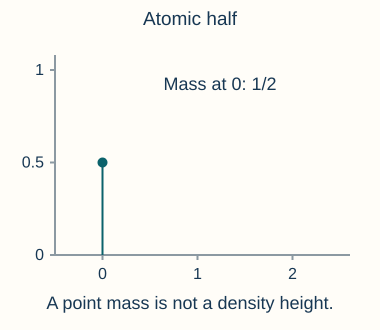
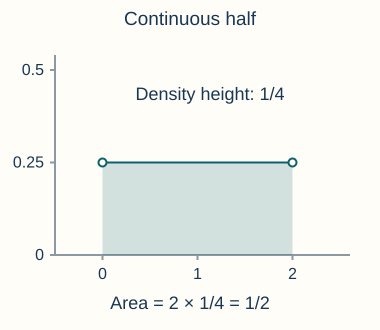
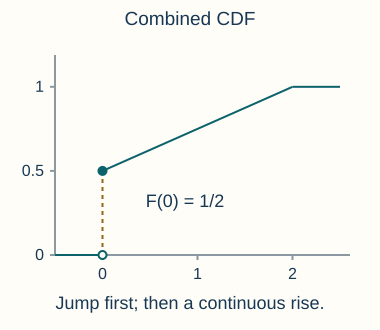
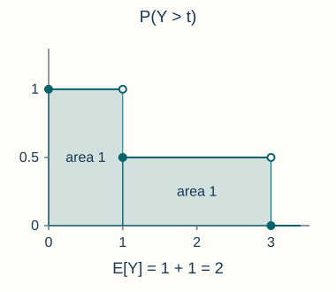
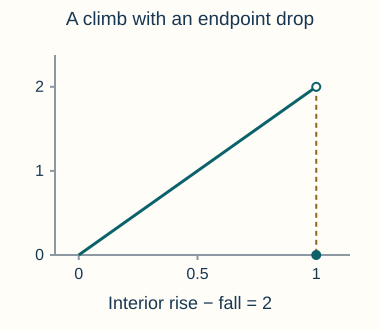
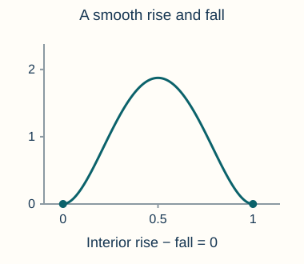
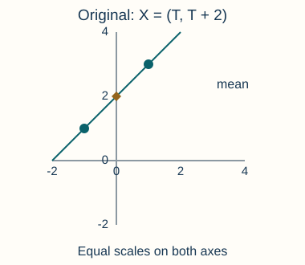
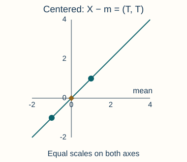

These notes are used for STAT 709 “Mathematical Statistics” at the University of Wisconsin–Madison. They are a learning aid rather than a substitute for a textbook; corrections and questions are welcome.
Purpose. Lectures 2 and 3 supplied random variables, their laws, and integration. We now give the probability integral its usual name: expectation. The central question is how information about a distribution becomes a useful numerical summary or a probability bound. An average loss, a variance, and an expected number of triangles in a graph are all expectations, even though their formulas may look different.
Route. We first learn to compute expectations from laws and tails. We then study norms and inequalities, and use them in examples involving log densities, random graphs, information theory, and collinearity. Independence and conditional expectation are developed further in Lecture 5; in this lecture, any independence used in a specific model is stated explicitly.
Learning goals
Distinguish an integrable random variable from one with an infinite or undefined expectation, and compute an expectation using its law.
Recognize discrete, absolutely continuous, mixed, and singular continuous laws without treating every continuous CDF as a density.
Apply Tonelli, Hölder, Cauchy–Schwarz, Jensen, Markov, and dominated convergence with their required hypotheses.
Check boundary assumptions, equality cases, and covariance normalizations in statistical applications.
1. Expectation
Let \(X:\Omega\to\R\) be a random variable on \((\Omega,\gF,P)\). If \(X\ge0\) almost surely, define \(\E X=\int_\Omega X\,dP\in[0,\infty]\). For a signed \(X\), write \(X^+=\max(X,0)\) and \(X^-=\max(-X,0)\). Then \(\E X=\E X^+-\E X^-\) is defined if at least one term is finite; \(\infty-\infty\) is undefined. We call \(X\) integrable, or say it has finite expectation, when \[\E|X|=\int_\Omega |X(\omega)|\,dP(\omega)<\infty.\] In that case both terms are finite and \(\E X=\int_\Omega X\,dP\in\R\).
Linearity holds for integrable random variables and does not require independence. Expectation also preserves inequalities: if \(X\le Y\) a.s. and both are integrable, then \(Y-X\ge0\), so positivity of the integral gives \(\E Y-\E X=\E(Y-X)\ge0\). For nonnegative variables the corresponding monotonicity also holds with infinite expectations.
Instructor’s NoteA unified definition
In undergraduate probability, expectation is a probability-weighted sum of outcomes for discrete random variables and a density-weighted integral for continuous random variables. Measure theory provides a unified definition. The weighting is “absorbed” into an abstract probability measure \(P\) without specifying the base measure.
Changing from outcomes to the law of a random variable
For a real-valued \(X\), its law is the probability measure \(\mu_X=P\circ X^{-1}\) on \((\R,\gB)\) given by \[\mu_X(B)=P\{\omega:X(\omega)\in B\},\qquad B\in\gB.\] The cumulative distribution function (CDF) is \(F_X(t)=P(X\le t)=\mu_X(( -\infty,t])\).
Identity. For a Borel function \(g:\R\to\R\), the change-of-variables identity is
\[\E[g(X)]=\int_\Omega g(X(\omega))\,dP(\omega) =\int_\R g(x)\,d\mu_X(x).\]
(1)When it applies. It holds for nonnegative \(g\), allowing \(+\infty\), and for integrable \(g(X)\); more generally it holds whenever the positive/negative-part definition is unambiguous. In particular, \(\E|g(X)|=\int|g|\,d\mu_X\).
Change of domain. The measure on the right lives on possible values of \(X\); it is not the original measure \(P\) on outcomes. This identity does not require a density or a one-to-one map. A vector-valued \(X\) uses the same argument with \(\R^d\) in place of \(\R\).
The law and its CDF determine each other. For \(a<b\),
\[F_X(b)-F_X(a)=P(a<X\le b) =\int_\Omega\mathbf1_{(a,b]}(X(\omega))\,dP(\omega) =\mu_X((a,b]).\]
(2)Thus the CDF specifies the probabilities of half-open intervals; the uniqueness of the Borel probability measure with these interval values is the CDF correspondence from Lecture 2. Notice the integration domain \(\Omega\) in the middle expression, rather than the interval \((a,b]\).
Model. Let \(p_j\ge0\), \(\sum_{j\ge0}p_j=1\), and \(\mu_0=\sum_{j\ge0}p_j\delta_j\), where \(\delta_j\) puts unit mass at \(j\). Let \(h\ge0\) be a Lebesgue density with \(\int_\R h(x)\,dx=1\). Then \[\mu(B)=\tfrac12\mu_0(B)+\tfrac12\int_B h(x)\,dx\] is a probability law.
CDF and expectation. Its CDF and, for integrable \(g\), its expectation are \[F(t)=\tfrac12\sum_{j\le t}p_j+\tfrac12\int_{-\infty}^t h(x)\,dx, \qquad \int g\,d\mu=\tfrac12\sum_{j\ge0}p_jg(j)+\tfrac12\int_\R g(x)h(x)\,dx.\]
Interpretation. The CDF jumps by \(p_j/2\) precisely at the integers with \(p_j>0\) and is continuous elsewhere. This law has neither a Lebesgue density nor a pmf that accounts for all its mass. It does have a density relative to the combined reference measure \(\sum_{j\ge0}\delta_j+dx\), as in Lecture 3.



For a concrete picture, take \(\mu=\tfrac12\delta_0+\tfrac12\mathrm{Unif}([0,2])\). Then \[F(t)=\begin{cases}0,&t<0,\\ \tfrac12+\tfrac14t,&0\le t\le2,\\1,&t>2. \end{cases}\] The jump at zero records an atom of mass \(1/2\); the rise from \(1/2\) to \(1\) over \((0,2)\) records the continuous half of the mass. Integrating only the ordinary density \(\tfrac14\mathbf1_{(0,2)}\) would miss the atom.
A three-part decomposition of a law
Low priority—not examined: Optional refinement of the mixed-law picture
The Cantor distribution is a probability law concentrated on the Cantor set, a subset of \([0,1]\) of Lebesgue measure zero, yet each individual point has probability zero. Its CDF is continuous but is not the integral of a Lebesgue density. It illustrates the third term in the decomposition; its full construction is optional here.
Every Borel probability measure on \(\R\) has a unique decomposition
\[\mu=\mu_{\mathrm{dis}}+\mu_{\mathrm{cont}}+\mu_{\mathrm{sing}}.\]
(3)Here the three terms are finite nonnegative measures whose total masses sum to one; individually they need not be probability measures.
The discrete (atomic) part is \(\mu_{\mathrm{dis}}=\sum_{a\in D}\mu(\{a\})\delta_a\), where \(D=\{a:\mu(\{a\})>0\}\) is at most countable. Its atoms give exactly the CDF jumps, since \(F(a)-F(a-)=\mu(\{a\})\).
The absolutely continuous part satisfies \(\mu_{\mathrm{cont}}(B)=\int_B f(x)\,dx\) for some \(f\ge0\). Its total mass \(\int f\) can be smaller than one. We use the legacy subscript “cont” for this part, but it means absolutely continuous with respect to Lebesgue measure, not merely a continuous CDF.
The singular continuous part \(\mu_{\mathrm{sing}}\) is concentrated on a Lebesgue-null Borel set and has no atoms: \(\mu_{\mathrm{sing}}(\{a\})=0\) for every \(a\). This distinguishes it from the entire singular part relative to Lebesgue measure, which also includes the atoms. The Cantor distribution is a standard example.1
Instructor’s NoteThree pictures of probability mass
Think of three ways to arrange probability mass: piles at individual points, mass spread out with a density, and atomless mass on a very thin set. The piles make jumps in the CDF. For the third picture, imagine successively concentrating the mass onto thinner collections of intervals: in the limit, all the probability sits on a zero-measure set, yet no single point carries a pile. The CDF is still continuous.
The construction and a precise proof reference are given in Section 4. No part of the high/mid calculations below requires this optional decomposition theorem.
Expectations from tails and Gaussian transformations
Conditions and identity. If \(f:[0,\infty)\to[0,\infty)\) is nondecreasing and continuously differentiable with \(f(0)=0\), then
\[\E[f(|X|)]=\int_0^\infty f'(t)P(|X|>t)\,dt.\]
(4)Why Tonelli applies. Both sides may be infinite. The appropriate interchange theorem is Tonelli’s theorem, because the integrand is nonnegative; one need not assume the desired expectation is finite beforehand. In particular, \[\E|X|=\int_0^\infty P(|X|>t)\,dt.\]
Interpretation. This relates the average magnitude to the entire tail curve, rather than to a single tail probability.
One square. If \(Z\sim N(0,1)\), then \(Z^2\) has the chi-squared distribution with one degree of freedom, denoted \(\chi_1^2\).
Two squares. If \(Z_1,Z_2\) are independent \(N(0,1)\) variables, then \[Z_1^2+Z_2^2\sim\chi_2^2=\mathrm{Exp}(\text{rate }1/2).\]
Rate convention. Our convention is that \(Y\sim\mathrm{Exp}(\text{rate }\lambda)\) has density \(\lambda e^{-\lambda y}\mathbf1_{\{y>0\}}\) and survival probability \(P(Y>y)=e^{-\lambda y}\) for \(y\ge0\). Thus the squared two-dimensional standard-normal radius has rate \(1/2\), not rate \(1\). The full density and polar-coordinate calculations are in Exercise 6 and its solution; see also the expectation examples in [3].
2. Functional perspective and inequalities
Norms, moments, and covariance
An equivalence class here is the collection of all random variables equal to one another with probability one. The zero element consists of variables that are zero almost surely, even if a chosen representative is nonzero on a null set. This is why norm zero means equality almost surely.
Space and norm. For \(1\le p<\infty\), let \(L^p(P)\) consist of random variables with \(\E|X|^p<\infty\). For \(p=\infty\), use the essentially bounded random variables. Their \(L^p\) norms are \[\|X\|_p=\begin{cases} (\E|X|^p)^{1/p},&1\le p<\infty,\\ \inf\{M\ge0:P(|X|>M)=0\},&p=\infty. \end{cases}\]
Essential bound. An empty set in the last infimum gives \(+\infty\), which means \(X\notin L^\infty\). The essential supremum ignores exceptional values on a zero-probability set.
Identifying variables. To obtain a norm, we identify variables equal almost surely, rather than treating different values on a null set as different elements.2
Let \(1\le p,q\le\infty\) with \(1/p+1/q=1\), interpreting \(1/\infty=0\). For \(X\in L^p(P)\) and \(Y\in L^q(P)\), \[\E|XY|\le\|X\|_p\|Y\|_q.\] In particular, \(X,Y\in L^2(P)\) imply \(\E|XY|\le(\E X^2)^{1/2}(\E Y^2)^{1/2}\).
The proof of Hölder, and the triangle inequality (Minkowski) needed for the norm assertion, are given in Exercise 7 and its complete solution. Positivity, homogeneity, and the treatment of null sets are included there. Finite-dimensional norm intuition from Lecture 1 helps, but is not itself a proof for an arbitrary probability space.
For \(X,Y\in L^2(P)\), define \[\mathrm{Cov}(X,Y)=\E[(X-\E X)(Y-\E Y)],\qquad \var(X)=\E[(X-\E X)^2].\]
Convexity and probability bounds
Let \(\varphi:\R\to\R\) be a finite convex function and let \(X\) be integrable. Then \(\E\varphi(X)\) is well defined in \((-\infty,\infty]\), and \[\varphi(\E X)\le\E\varphi(X).\] If \(\varphi\) is strictly convex, equality holds if and only if \(X=\E X\) almost surely.
Proof.
Supporting line. Put \(m=\E X\). A finite convex function on \(\R\) has a supporting line at \(m\): for some finite \(a\), \(\varphi(x)\ge\varphi(m)+a(x-m)\) for all \(x\). Indeed, every left secant slope at \(m\) is at most every right secant slope, so choose \(a\) between their supremum and infimum. These bounds are finite by comparison with secants through \(m-1\) and \(m+1\).
Take expectations. The affine lower bound is integrable, so the negative part of \(\varphi(X)\) has finite expectation. Taking expectations proves the inequality even if the positive part has infinite expectation.
Equality. For strict convexity, the supporting line touches the graph only at \(m\); a second contact would force equality along the joining segment, contrary to strict convexity. Therefore the nonnegative gap \(\varphi(X)-\varphi(m)-a(X-m)\) vanishes almost surely precisely when \(X=m\) almost surely. A nonnegative random variable has expectation zero only if it vanishes almost surely: apply positivity to \(\E V\ge k^{-1}P(V\ge k^{-1})\) for every positive integer \(k\) and take the countable union. This proves the equality assertion; the converse is immediate.
◻
Jensen: two orders of averaging
The geometric question · Read the explanation
- A · average, then evaluate
- 0
- B · evaluate, then average
- 1
- Gap B − A
- 1
Averaged input: (1 − s)x + sy = 0. Circle A lies on the curve; diamond B lies on the dashed chord.
- A · average, then evaluate
- 0
- B · evaluate, then average
- 1
- Gap B − A
- 1
Averaged input: (1 − s)x + sy = 0. Circle A lies on the curve; diamond B lies on the dashed chord.
The geometric question is whether averaging before applying a convex function can give a larger value than applying it first and then averaging. For \(P(X=-1)=P(X=1)=1/2\) and \(\varphi(x)=x^2\), \[\varphi(\E X)=0,\qquad \E\varphi(X)=1.\] More generally, for \(P(X=x)=1-s\) and \(P(X=y)=s\), \[(1-s)x^2+sy^2-\big((1-s)x+sy\big)^2=s(1-s)(x-y)^2\ge0.\] The graph lies below the chord: the gap is zero for a degenerate mixture (\(s=0\) or \(1\)) or identical endpoints, and positive otherwise. This calculation illustrates Jensen for a two-point law; the theorem above covers arbitrary integrable random variables.
For a nonnegative random variable \(X\) and \(a>0\), \[P(X\ge a)\le\frac{\E X}{a}.\] The bound is useful when \(\E X<\infty\); with \(\E X=\infty\) it remains valid but gives no information.
Proof. Pointwise, \(a\mathbf1_{\{X\ge a\}}\le X\mathbf1_{\{X\ge a\}}\le X\). Take expectations and divide by the positive number \(a\). ◻
Markov: a rectangle inside the expectation
Y = X², with X uniform on [0, 4]. Move the threshold a. Picture question · Area proof
- Whole area · E Y
- 16/3 ≈ 5.3333
- Rectangle · a × P(Y > a)
- 4 × 0.5 = 2 ≤ 16/3
- Divide by a · Markov’s bound
- 0.5 ≤ 16/(3a) ≈ 1.3333
Static view: a = 4.
The rectangle’s width is a; its height is P(Y > a).
- Whole area · E Y
- 16/3 ≈ 5.3333
- Rectangle · a × P(Y > a)
- 4 × 0.5 = 2 ≤ 16/3
- Divide by a · Markov’s bound
- 0.5 ≤ 16/(3a) ≈ 1.3333
Why the rectangle proves Markov’s inequality
A picture proof: fit a rectangle under the tail.
For \(Y\ge0\), the tail identity says that \(\E Y\) is the area under the nonincreasing curve \(S(t)=P(Y>t)\): \[\E Y=\int_0^\infty S(t)\,dt.\] Choose a threshold \(a>0\). Draw the rectangle with opposite corners \((0,0)\) and \((a,S(a))\). As \(a\) changes, why does this rectangle always stay below the curve?
For the picture, take \(Y=X^2\) with \(X\sim\operatorname{Unif}([0,4])\). For \(0\le t\le16\), \[S(t)=P(X^2>t)=P(X>\sqrt t)=1-\frac{\sqrt t}{4},\] and \(S(t)=0\) for \(t>16\). The whole shaded area is \[\E Y=\E X^2=\frac14\int_0^4 x^2\,dx=\frac{16}{3}.\] At \(a=4\), the rectangle has width \(4\), height \(P(Y>4)=1/2\), and area \(2\le16/3\).
The geometric reason works for every nonnegative \(Y\): for \(0\le t<a\), \(S(t)\ge S(a)\). Comparing areas gives \[\underbrace{\E Y}_{\text{whole area}} =\int_0^\infty S(t)\,dt \ge\int_0^a S(t)\,dt \ge\underbrace{aP(Y>a)}_{\text{rectangle area}}.\] Dividing by \(a\) yields \(P(Y>a)\le\E Y/a\). For the theorem’s \(P(Y\ge a)\) version, use \(\{Y\ge a\}\subseteq\{Y>t\}\) for every \(t<a\): the rectangle of height \(P(Y\ge a)\) also fits under the curve on \([0,a)\), so \(\E Y\ge aP(Y\ge a)\). A single endpoint does not change its area.
Applying Markov to the nonnegative variable \((X-\E X)^2\) gives Chebyshev’s inequality, for \(X\in L^2(P)\) and \(t>0\): \[P(|X-\E X|\ge t)\le\frac{\var(X)}{t^2}.\] This is a probability bound from a moment, whereas the tail identity recovers a moment from all tail probabilities. A bound greater than one can always be replaced by one; it is valid but uninformative.
Almost sure convergence and expectations
We say \(X_n\to X\) almost surely (a.s.) if there is a measurable \(N\) with \(P(N)=0\) such that \(X_n(\omega)\to X(\omega)\) for every \(\omega\notin N\). This is pointwise convergence outside a single null set, not necessarily convergence at every outcome. We write \(X_n\to X\) a.s., rather than suppressing the mode of convergence.
Instructor’s NoteFollow one outcome at a time
Think of each outcome \(\omega\) as choosing a path \(X_1(\omega),X_2(\omega),\ldots\). Almost sure convergence says that the path settles toward \(X(\omega)\) for almost every choice. We can set the values on the exceptional null set to zero and picture convergence along every path. To understand convergence of averages, also picture the integrable envelope \(Y\) in the DCT below: it keeps the paths from making ever taller spikes in ever smaller regions, as in Lecture 3.
Let \(X:\Omega\to\R\) be a random variable on \((\Omega,\gF,P)\). If \(X\ge0\) almost surely, define \(\E X=\int_\Omega X\,dP\in[0,\infty]\). For a signed \(X\), write \(X^+=\max(X,0)\) and \(X^-=\max(-X,0)\). Then \(\E X=\E X^+-\E X^-\) is defined if at least one term is finite; \(\infty-\infty\) is undefined. We call \(X\) integrable, or say it has finite expectation, when \[\E|X|=\int_\Omega |X(\omega)|\,dP(\omega)<\infty.\] In that case both terms are finite and \(\E X=\int_\Omega X\,dP\in\R\).
Assumptions. For the dominated convergence theorem, suppose \(X_n\to X\) a.s. and \(|X_n|\le Y\) a.s. for every \(n\), with \(Y\ge0\) and \(\E Y<\infty\). Recall the definition of integrability.
Common exceptional set. Outside the countable union of the exceptional sets, \(|X|\le Y\) and \(|X_n-X|\le2Y\).
Conclusions. The DCT from Lecture 3 therefore gives \[\E|X_n-X|\longrightarrow0,\qquad |\E X_n-\E X|\le\E|X_n-X|\longrightarrow0.\] The first assertion is convergence in the \(L^1\) norm defined above.
3. Useful examples
The gradient of a log density
Identity. Let \(f\) be a probability density on \(\R^d\). Wherever \(f(x)>0\), \(\nabla_x\log f(x)=\nabla f(x)/f(x)\). A useful sufficient condition for
\[\E[\nabla_x\log f(X)]=0,\qquad X\sim f,\]
(5)Sufficient conditions. is that \(f\) is continuously differentiable on all of \(\R^d\) and has compact support. Here compact support means that \(f\) is zero outside a bounded closed set. Define the log-gradient arbitrarily, say zero, where \(f=0\); this changes nothing under the law of \(X\).
Proof route. Under the stated conditions its expectation exists. Exercise 8 and its complete solution justify integrability, reduction to \(\int\nabla f\,dx\), and the vanishing boundary terms using Fubini and the fundamental theorem of calculus.
Instructor’s NoteUphill and downhill contributions
For a family of densities \(f_\theta\), the parameter score is \(\partial_\theta\log f_\theta(x)\), differentiated in the model parameter while the observation \(x\) is held fixed. Picture keeping the data point fixed while changing the model curve. We will study parameter-based inference later.
Picture a smooth density as a hill. Weighting its log-slope \(f'/f\) by \(f\) leaves the total rise minus the total fall. When the hill starts and ends at height zero, these contributions cancel. For \(f(x)=2x\mathbf1_{(0,1)}(x)\), the curve climbs from zero to two, then drops abruptly at the endpoint: \[\E[(\log f)'(X)]=\int_0^1 \frac{1}{x}\,2x\,dx=2.\] The interior slopes capture the climb but miss the endpoint drop. The boundary term \(f(1-)-f(0+)=2\) records that difference. Here we move along the curve by changing \(x\); changing a model parameter instead gives a parameter score.3
The moment method for random graphs
Low priority—not examined: Count structures with indicators
Model. In the Erdős–Rényi random graph \(G\sim\mathcal G(n,p_n)\), the vertex set is \(\{1,\ldots,n\}\) and the indicators \(A_{ij}\) for \(1\le i<j\le n\) are independent Bernoulli variables with success probability \(p_n\). Set \(A_{ji}=A_{ij}\) and \(A_{ii}=0\): opposite orientations of one undirected edge are the same variable, not independent copies.
Count with indicators. Let \(B_{ijk}\) be the event that vertices \(i<j<k\) form a triangle. Then \[N=\sum_{i<j<k}\mathbf1_{B_{ijk}},\qquad \E N=\sum_{i<j<k}P(B_{ijk})=\binom n3 p_n^3.\]
Expectation. Linearity needs no independence among the triangle indicators. Independence of the three distinct edges gives \(P(B_{ijk})=p_n^3\).
First moment. Markov yields \[P(N\ge1)\le\min\{1,\E N\}.\]
Sparse regime. For \(p_n=n^{-\alpha}\) with fixed \(\alpha>0\), \(\E N=(1+o(1))n^{3-3\alpha}/6\). Hence for \(\alpha>1\) the probability of no triangle tends to one.
Second moment. A diverging expected count when \(\alpha<1\) does not by itself show that a triangle is likely: variability must also be controlled. A second-moment calculation in Exercise 9 and its solution supplies the missing argument and gives \[P(N=0)=\begin{cases}1-o(1),&\alpha>1,\\o(1),&0<\alpha<1. \end{cases}\]
Boundary. The boundary \(\alpha=1\) has \(\E N\to1/6\); these two off-boundary arguments do not determine its limiting probability of no triangle.
KL divergence, entropy, and cross-entropy
Measures and derivative. Let \(P,Q\) be probability measures on \((\R^d,\gB^d)\) with \(P\ll Q\) and let \(r=dP/dQ\) be their Radon–Nikodym derivative. Recall that this means \(P(B)=\int_B r\,dQ\), with \(r\ge0\) and \(\int r\,dQ=1\).
Definition and conventions. The Kullback–Leibler (KL) divergence is \[D_{\mathrm{KL}}(P\|Q)=\int\log r\,dP=\int r\log r\,dQ,\] where \(0\log0=0\). The value of \(\log r\) on \(\{r=0\}\) is irrelevant under \(P\). This integral is well defined, possibly \(+\infty\), because \((r\log r)^-\le1/e\) and \(Q\) is a probability measure. If \(P\not\ll Q\), we set \(D_{\mathrm{KL}}(P\|Q)=+\infty\).
Density formula. For Lebesgue densities \(f,g\) it becomes \[D_{\mathrm{KL}}(P\|Q)=\int f(x)\log\frac{f(x)}{g(x)}\,dx,\] with a zero contribution where \(f=0\) and an infinite contribution if \(g=0\) on a set of positive \(P\)-probability.
Let \(\varphi:\R\to\R\) be a finite convex function and let \(X\) be integrable. Then \(\E\varphi(X)\) is well defined in \((-\infty,\infty]\), and \[\varphi(\E X)\le\E\varphi(X).\] If \(\varphi\) is strictly convex, equality holds if and only if \(X=\E X\) almost surely.
Supporting-line gap. The convex-function idea in Jensen’s inequality applies to \(h(u)=u\log u\), extended by \(h(0)=0\) on \([0,\infty)\). To avoid a hidden domain or finite-integral assumption, use its explicit supporting-line gap: \[u\log u-u+1\ge0\quad(u\ge0),\qquad u\log u-u+1=0\ \Longleftrightarrow\ u=1.\]
Integrate the gap. For \(u>0\) its derivative is \(\log u\) and its second derivative is \(1/u\); at \(u=0\) the gap is one. Consequently, \[D_{\mathrm{KL}}(P\|Q)=\int(r\log r-r+1)\,dQ\ge0.\]
Equality. Equality holds exactly when \(r=1\) \(Q\)-a.e., which is equivalent to \(P=Q\) as measures. “\(P=Q\) almost surely” is not the appropriate statement. KL is generally asymmetric, so it is not a metric, although it is a useful measure of discrepancy.
If \(P\) has pmf \(p_1,\ldots,p_K\) and \(Q\) is uniform on \(\{1,\ldots,K\}\), \[D_{\mathrm{KL}}(P\|Q)=\sum_{k:p_k>0}p_k\log(Kp_k) =\log K-H(P),\qquad H(P)=-\sum_{k=1}^K p_k\log p_k.\] Here \(H(P)\) is the entropy. In particular, \(H(P)\le\log K\), with equality exactly for the uniform law. For a Bernoulli law with parameter \(\gamma\), the Lecture 1 formula is \[H(P)=-\gamma\log\gamma-(1-\gamma)\log(1-\gamma),\] including the endpoints by \(0\log0=0\). All logarithms here are natural.
Loss identity. For target probabilities \(p_k\) and predicted probabilities \(q_k\) over \(K\) classes, the cross-entropy loss is \[H(p,q)=\E_{Y\sim p}[-\log q_Y] =-\sum_{k:p_k>0}p_k\log q_k=H(p)+D_{\mathrm{KL}}(p\|q).\]
Zero probabilities and minimization. If \(q_k=0\) while \(p_k>0\), both the loss and divergence are infinite. Since \(H(p)\) is fixed during prediction, minimizing cross-entropy is the same as minimizing this KL divergence.
Softmax. Real-valued scores \(z_1,\ldots,z_K\), often called logits, produce positive predicted probabilities through the softmax function \[q_k=\frac{e^{z_k}}{\sum_{j=1}^K e^{z_j}},\qquad k=1,\ldots,K.\]
Collinearity and covariance geometry
Low priority—not examined: Center before interpreting a zero-variance direction
Relations among features. In regression, regard \(X=(X_1,\ldots,X_p)^\top\) as a random feature vector and observations as its realized values. A nontrivial deterministic relation \(a^\top X=0\) a.s. puts its law on a linear subspace. More generally, \(a^\top X=c\) a.s. puts the law on an affine hyperplane. Duplicate features can cause the first relation; a full set of category indicators sums to one and gives the second.
Centering and covariance. Let \(m=\E X\) and \(\Sigma=\E[(X-m)(X-m)^\top]\), assuming finite second moments. If \(\mathrm{rank}(\Sigma)=r<p\), write \(\Sigma=U\Lambda U^\top\), where \(U\) is \(p\times r\), \(U^\top U=I_r\), and \(\Lambda\) contains the positive eigenvalues. For \(U^\top u=0\), \[\var(u^\top X)=u^\top\Sigma u=0, \qquad u^\top(X-m)=0\quad\hbox{a.s.}\]
Reconstruction. Using a finite orthonormal basis of the orthogonal complement shows \[X=m+U\widetilde X\quad\hbox{a.s.},\qquad \widetilde X=U^\top(X-m).\] Thus the law is concentrated on \(m+\mathrm{range}(U)\), an affine subspace. The complete argument and a translated-line example are in Exercise 10 and its solution. Centering locates the subspace; \(U^\top X\) alone omits the reconstruction’s mean term.
Data and formula. For observations \(X^{(1)},\ldots,X^{(n)}\in\R^p\), let \(\bar X=n^{-1}\sum_i X^{(i)}\) and let \(\mathsf X_c\) be the \(n\times p\) matrix with rows \((X^{(i)}-\bar X)^\top\). The course’s empirical covariance convention is
\[\widehat\Sigma=\frac1n\sum_{i=1}^n (X^{(i)}-\bar X)(X^{(i)}-\bar X)^\top =\frac{\mathsf X_c^\top\mathsf X_c}{n}.\]
(6)Normalization and centering. The factor \(1/(n-1)\) is another convention, but is not used here. If the population mean is known to be zero and centering is not performed, \(n^{-1}\sum_i X^{(i)}(X^{(i)})^\top\) estimates the second moment, which then equals the population covariance. Otherwise it estimates a different matrix.
Interpretation. PCA finds directions of greatest empirical variance. Since \(\mathrm{rank}(\widehat\Sigma)\le\min(p,n-1)\), sample rank deficiency alone does not establish population collinearity. A small-variance direction also need not be irrelevant for predicting a response.
4. Further reading
Further reading: Measure decomposition and complete function spaces
Meaning. For two measures, mutual singularity \(\nu\perp\eta\) means that some measurable set \(S\) satisfies \(\nu(S^c)=0\) and \(\eta(S)=0\). These are disjoint sets of concentration, not necessarily disjoint topological supports. A set of concentration need not be unique or be the largest set on which the measure is positive.
Remove atoms. Here is the construction behind (3). For each integer \(k\ge1\), there are at most \(k\) atoms of mass at least \(1/k\); hence their union \(D\) is countable. Remove the atomic measure to form the nonnegative atomless measure \(\nu=\mu-\mu_{\mathrm{dis}}\).
Decompose the remainder. Apply the Lebesgue decomposition theorem to \(\nu\) relative to Lebesgue measure \(\lambda\): \(\nu=\mu_{\mathrm{cont}}+\mu_{\mathrm{sing}}\), where \(\mu_{\mathrm{cont}}\ll\lambda\) and \(\mu_{\mathrm{sing}}\perp\lambda\). Both components are atomless because each is bounded by \(\nu\).
Concentration sets and proof. If \(S\) is a Lebesgue-null set carrying \(\mu_{\mathrm{sing}}\), remove \(D\) from it without changing its \(\mu_{\mathrm{sing}}\) mass. Then \[\mu(A)=(\mu_{\mathrm{dis}}+\mu_{\mathrm{cont}})(A\cap S^c) +\mu_{\mathrm{sing}}(A\cap S).\] This recovers the original mutually exclusive-events picture precisely. The atoms are determined by \(\mu\), and uniqueness of the two-part Lebesgue decomposition gives uniqueness of all three parts. A proof of the theorem used here is in John Hunter’s Measure Theory, Theorem 6.27; see also Chapter 6 of [2]. The existence of the singular continuous component does not follow merely from the phrase “singular relative to the other two parts”; its atomless property is essential.
A Banach space is a normed vector space in which every Cauchy sequence converges in that norm to an element of the same space. “Cauchy” means that \(\|X_n-X_m\|\) becomes arbitrarily small for all sufficiently large \(n,m\).
On almost-sure equivalence classes, \(L^p(P)\) is a complete normed space, also called a Banach space,4 for \(1\le p\le\infty\). The completeness proof is in Hunter’s Theorem 7.10. Convergence in its norm is written \[X_n\stackrel{L^p}{\longrightarrow}X \quad\Longleftrightarrow\quad\|X_n-X\|_p\longrightarrow0.\] This is a different definition from almost sure convergence. Section 1.5.1 of [3] develops modes of convergence further. For KL divergence, entropy, and cross-entropy, Chapter 2 of [1] gives an information-theoretic perspective.
5. Exercises and complete solutions10 exercises · complete solutions
For a real random variable \(X\) with law \(\mu_X\), prove \(\E g(X)=\int g\,d\mu_X\) first for a nonnegative simple Borel function \(g=\sum_{j=1}^m c_j\mathbf1_{B_j}\) with disjoint \(B_j\). Extend the identity to nonnegative Borel functions and then to integrable signed functions.
Reveal solution
For an indicator, \(\E\mathbf1_B(X)=P(X\in B)=\mu_X(B)\). Finite additivity of the integral now gives \[\E g(X)=\sum_j c_j P(X\in B_j)=\sum_j c_j\mu_X(B_j)=\int g\,d\mu_X.\] For a general nonnegative Borel \(g\), take simple \(g_n\uparrow g\). Then \(g_n(X)\uparrow g(X)\), so applying MCT once under \(P\) and once under \(\mu_X\) gives \[\E g(X)=\lim_n\E g_n(X)=\lim_n\int g_n\,d\mu_X=\int g\,d\mu_X.\] This includes infinite values. Apply this identity to \(|g|\) to see that integrability on the two spaces is equivalent. Finally apply it separately to \(g^+\) and \(g^-\) and subtract when both integrals are finite (or when at least one is finite for an extended expectation). The proof never uses injectivity or a density.
Prove the main-text identity \(\E|X|=\int_0^\infty P(|X|>t)\,dt\) without assuming finiteness. Derive (4) under its stated assumptions. As a numerical illustration, calculate both sides for a variable \(Y\) equally likely to be 1 or 3.
Reveal solution

For each fixed \(y\ge0\), \(y=\int_0^\infty\mathbf1_{\{t<y\}}\,dt\). The function \((\omega,t)\mapsto\mathbf1_{\{t<|X(\omega)|\}}\) is measurable and nonnegative. Tonelli on \(P\otimes dt\) therefore gives \[\E|X|=\int_\Omega\int_0^\infty\mathbf1_{\{t<|X(\omega)|\}}\,dt\,dP =\int_0^\infty P(|X|>t)\,dt.\] For the extension, the fundamental theorem of calculus gives \(f(y)=\int_0^y f'(t)\,dt\). Since \(f'\ge0\), another application of Tonelli to \(f'(t)\mathbf1_{\{t<|X(\omega)|\}}\) yields (4). Neither argument needs an a priori finite expectation. The value of the indicator at \(t=y\) does not affect the Lebesgue integral in \(t\). For the two-point example, \(\E Y=(1+3)/2=2\), while \[P(Y>t)=\begin{cases}1,&0\le t<1,\\1/2,&1\le t<3,\\0,&t\ge3. \end{cases} \qquad \int_0^\infty P(Y>t)\,dt=1\cdot1+\tfrac12\cdot2=2.\] The rectangle picture is an illustration; Tonelli proves the identity for arbitrary distributions.
Suppose \(1\le p<q<\infty\) and \(X\in L^q(P)\). Prove \(\|X\|_p\le\|X\|_q\). State the analogous conclusion for \(q=\infty\).
Reveal solution
Apply Hölder to \(|X|^p\cdot1\) with conjugate exponents \(q/p\) and \(q/(q-p)\). Its first factor is integrable to the required power because \((|X|^p)^{q/p}=|X|^q\). Since \(P(\Omega)=1\), \[\E|X|^p\le(\E|X|^q)^{p/q} (\E1^{q/(q-p)})^{(q-p)/q}=(\E|X|^q)^{p/q}.\] Taking the \(p\)th root gives the claimed bound and proves finiteness. If \(X\in L^\infty\), for every \(\varepsilon>0\) we have \(|X|\le\|X\|_\infty+\varepsilon\) a.s.; hence \(\|X\|_p\le\|X\|_\infty+\varepsilon\). Let \(\varepsilon\downarrow0\). The constant one in these comparisons uses the fact that the underlying measure has total mass one.
Let \(X,Y\in L^2(P)\). Show that \(|\mathrm{Cov}(X,Y)|\le\sqrt{\var(X)\var(Y)}\) and treat the case where one variance is zero.
Reveal solution
Set \(U=X-\E X\) and \(V=Y-\E Y\). These are in \(L^2\), and Cauchy–Schwarz gives \[|\mathrm{Cov}(X,Y)|=|\E UV|\le\E|UV| \le(\E U^2)^{1/2}(\E V^2)^{1/2} =\sqrt{\var(X)\var(Y)}.\] If \(\var(X)=\E U^2=0\), then \(U=0\) a.s.: for each \(k\ge1\), \(P(|U|\ge1/k)\le k^2\E U^2=0\), and their union is \(\{|U|>0\}\). Thus \(\mathrm{Cov}(X,Y)=0\) for every such \(Y\); the same applies when \(\var(Y)=0\). If both variances are positive, dividing by their standard deviations shows that the correlation is in \([-1,1]\). Correlation is not defined by that quotient when one variance is zero.
Use scores \(z_0=0,z_1=z\) for classes \(0,1\). Derive the softmax probability \(q_1\) and the cross-entropy for an observed class \(y\in\{0,1\}\). Also give the formula for a target probability \(\gamma\in[0,1]\) of class 1.
Reveal solution
The two probabilities are \(q_1=e^z/(1+e^z)=1/(1+e^{-z})\) and \(q_0=1/(1+e^z)\). Hence \(\log q_1=z-\log(1+e^z)\) and \(\log q_0=-\log(1+e^z)\). Substituting into the loss gives \[-y\log q_1-(1-y)\log q_0=\log(1+e^z)-yz.\] For \(\widetilde y=2y-1\in\{-1,1\}\) this equals \(\log(1+e^{-\widetilde y z})\), the binary logistic loss. A target probability \(\gamma\) gives \(\log(1+e^z)-\gamma z\) by replacing \(y\) with \(\gamma\). More general scores yield the same probabilities after subtracting \(z_0\) from both scores, so only their difference matters.
Find the density of \(Z^2\) for \(Z\sim N(0,1)\). For independent standard normals \(Z_1,Z_2\), prove that \(Z_1^2+Z_2^2\) is exponential with rate \(1/2\).
Reveal solution
Writing \(\phi(z)=(2\pi)^{-1/2}e^{-z^2/2}\), for \(t>0\), \(P(Z^2\le t)=\int_{-\sqrt t}^{\sqrt t}\phi(z)\,dz\). Differentiating both endpoints gives \[f_{Z^2}(t)=\frac{\phi(\sqrt t)+\phi(-\sqrt t)}{2\sqrt t} =\frac{e^{-t/2}}{\sqrt{2\pi t}},\qquad t>0.\] There is no atom at zero, since \(P(Z=0)=0\); the density is zero for \(t<0\). This is the \(\chi_1^2\) density. For the two-dimensional radius, independence gives the joint density \((2\pi)^{-1}e^{-(z_1^2+z_2^2)/2}\). For \(t\ge0\), polar coordinates, including their Jacobian \(r\), give \[P(Z_1^2+Z_2^2>t) =\int_0^{2\pi}\int_{\sqrt t}^{\infty}\frac1{2\pi}e^{-r^2/2}r\,dr\,d\theta =e^{-t/2}.\] Differentiating \(1-e^{-t/2}\) yields density \(\tfrac12e^{-t/2}\) on \((0,\infty)\). Its mean, from the tail identity, is \(\int_0^\infty e^{-t/2}\,dt=2\), consistent with \(\E Z_1^2+\E Z_2^2=2\).
Prove Hölder’s inequality and verify the norm properties of \(L^p(P)\), \(1\le p\le\infty\), after identifying variables equal almost surely.
Reveal solution
For \(1<p<\infty\) and \(q=p/(p-1)\), Young’s scalar inequality is \(ab\le a^p/p+b^q/q\) for \(a,b\ge0\). To see it, for fixed \(b\) minimize \(a^p/p-ab\) over \(a\ge0\); its minimum occurs at \(a=b^{1/(p-1)}\) and equals \(-b^q/q\) (including \(b=0\)). If \(\|X\|_p,\|Y\|_q\) are positive, apply Young to \(|X|/\|X\|_p\) and \(|Y|/\|Y\|_q\) and integrate. The right side is \(1/p+1/q=1\), which proves Hölder. If one norm is zero, that variable is zero a.s., so the result is immediate. For \(p=1,q=\infty\), the bound follows from \(|Y|\le\|Y\|_\infty+\varepsilon\) a.s. and then \(\varepsilon\downarrow0\); the other endpoint is symmetric.
Nonnegativity and homogeneity follow directly from the definitions. For finite \(p\), norm zero implies \(X=0\) a.s. because \(P(|X|\ge1/k)\le k^p\E|X|^p=0\) for all \(k\). For \(p=\infty\), norm zero implies \(P(|X|>1/k)=0\) for all \(k\), with the same conclusion. Conversely an a.s. zero variable has norm zero. This also proves that the value of a norm is unchanged by null-set modifications.
It remains to prove the triangle inequality. For \(p=1\), integrate \(|X+Y|\le|X|+|Y|\). For \(p=\infty\), combine a.s. bounds with \(\varepsilon>0\) and let \(\varepsilon\downarrow0\). For \(1<p<\infty\), first use \(|X+Y|^p\le2^{p-1}(|X|^p+|Y|^p)\), a scalar convexity inequality, to establish \(X+Y\in L^p\). Then Hölder gives \[\begin{aligned} \E|X+Y|^p &\le\E\big[|X||X+Y|^{p-1}\big]+\E\big[|Y||X+Y|^{p-1}\big]\\ &\le(\|X\|_p+\|Y\|_p) \big(\E|X+Y|^{(p-1)q}\big)^{1/q}\\ &=(\|X\|_p+\|Y\|_p)\|X+Y\|_p^{p-1}.\end{aligned}\] If \(\|X+Y\|_p=0\) the triangle inequality is immediate; otherwise divide by its finite positive \((p-1)\)st power. This proves Minkowski without assuming the norm property one is trying to establish. Together with linearity of almost-sure equivalence classes, these facts give the claimed normed vector space. Completeness is a separate theorem, referenced in the further reading.
Let \(f\ge0\) be a \(C^1\) density on \(\R^d\), zero outside a compact set. Define \(S(x)=\nabla f(x)/f(x)\) if \(f(x)>0\) and \(S(x)=0\) otherwise. Prove that every component of \(S(X)\) is integrable and \(\E S(X)=0\). Give one smooth-at-the-boundary one-dimensional example.
Reveal solution


At a point where \(f=0\), nonnegativity makes that point a differentiable minimum, so \(\nabla f=0\). For each coordinate \(j\), \[\E|S_j(X)|=\int_{\{f>0\}}|\partial_j f(x)|\,dx =\int_{\R^d}|\partial_j f(x)|\,dx<\infty,\] because the derivative is continuous and compactly supported. Thus \[\E S_j(X)=\int_{\R^d}\partial_j f(x)\,dx.\] Choose \(R\) so that the support is inside \((-R,R)^d\). For fixed other coordinates, the fundamental theorem of calculus gives \[\int_{-R}^R\partial_j f(x)\,dx_j =f(x_1,\ldots,R,\ldots,x_d)-f(x_1,\ldots,-R,\ldots,x_d)=0.\] Absolute integrability permits Fubini to integrate this zero over the other coordinates. Thus every component of \(\E S(X)\) is zero. The calculation uses integration of a spatial derivative and vanishing boundary terms, not differentiation of a scalar normalizing constant with respect to \(x\). For example, \(f(x)=30x^2(1-x)^2\mathbf1_{(0,1)}(x)\) integrates to one, since \(\int_0^1(x^2-2x^3+x^4)\,dx=1/30\). Both \(f\) and its interior derivative vanish at the endpoints, so the zero extension is \(C^1\). On \((0,1)\) the log-derivative is \(2/x-2/(1-x)\). Although it is unbounded, it is integrable under this density by the argument above, and its expectation is \(f(1)-f(0)=0\). Compare the nonzero boundary contribution of the \(2x\) density in the main-text Instructor’s Note.
Low priority—not examined: Details for the optional random-graph threshold
For \(G\sim\mathcal G(n,p_n)\), let \(N\) count triangles. Compute its variance and use it to show \(P(N=0)\to0\) if \(p_n=n^{-\alpha}\), \(0<\alpha<1\).
Reveal solution
Each triangle indicator has variance \(p_n^3-p_n^6\). Distinct triangles with no common edge depend on disjoint sets of independent edge variables and hence have covariance zero, even if they share a vertex. Those sharing one edge have five distinct required edges, so covariance \(p_n^5-p_n^6\). There are \(\binom n2\binom{n-2}2=6\binom n4\) unordered pairs sharing an edge. Since a variance expansion counts each unordered pair twice, \[\var(N)=\binom n3(p_n^3-p_n^6)+12\binom n4(p_n^5-p_n^6).\] For \(n\ge3\) and \(p_n>0\), Chebyshev, with \(m_n=\E N>0\), gives \[P(N=0)\le P(|N-m_n|\ge m_n)\le\frac{\var(N)}{m_n^2} \le\frac{1}{\binom n3p_n^3} +\frac{12\binom n4}{\binom n3^2p_n}.\] As \(n\to\infty\), the terms are respectively \(O(n^{-3+3\alpha})\) and \(O(n^{-2+\alpha})\), both tending to zero for \(0<\alpha<1\). This proves the claimed existence of a triangle with probability tending to one. The \(\alpha>1\) assertion follows from the first moment as in the main text; no critical-case probability was proved.
Low priority—not examined: Details for covariance geometry
Under the finite-second-moment and eigendecomposition assumptions of Section 3.4, prove \(X=m+UU^\top(X-m)\) a.s. Check the empirical covariance formula and rank bound. Illustrate why “linear subspace” needs centering.
Reveal solution
Choose an orthonormal basis \(v_1,\ldots,v_{p-r}\) for the orthogonal complement of the columns of \(U\). For each \(j\), \[\E\big[(v_j^\top(X-m))^2\big]=v_j^\top\Sigma v_j=0.\] The zero-expectation argument from Exercise 4 shows that each scalar vanishes a.s. A finite union of the exceptional null sets is null, so all coordinates vanish simultaneously outside one null set. The orthogonal projection onto the complement is \(I-UU^\top=\sum_j v_jv_j^\top\), giving \((I-UU^\top)(X-m)=0\) a.s. If \(r=0\), the same argument gives \(X=m\) a.s.


Matrix multiplication gives \(\mathsf X_c^\top\mathsf X_c=\sum_i(X^{(i)}-\bar X)(X^{(i)}-\bar X)^\top\), so division by \(n\) proves (6). Since \(\mathbf1_n^\top\mathsf X_c=0\), the columns lie in the \((n-1)\)-dimensional orthogonal complement of \(\mathbf1_n\). Also \(\ker(\mathsf X_c^\top\mathsf X_c)=\ker(\mathsf X_c)\) because \(v^\top\mathsf X_c^\top\mathsf X_cv=\|\mathsf X_cv\|^2\). Thus \(\mathrm{rank}(\widehat\Sigma)=\mathrm{rank}(\mathsf X_c) \le\min(p,n-1)\). Let \(T\) take \(-1\) and \(1\) equally likely and let \(X=(T,T+2)^\top\). Then \(m=(0,2)^\top\) and \[\Sigma=\begin{pmatrix}1&1\\1&1\end{pmatrix},\quad U=\frac1{\sqrt2}\begin{pmatrix}1\\1\end{pmatrix},\quad\Lambda=(2).\] The two outcomes \((-1,1)\) and \((1,3)\) lie on the affine line \(x_2=x_1+2\), while \(X-m\) lies on the linear line \(x_2=x_1\). For \(u=(1,-1)^\top/\sqrt2\), \(u^\top X=-\sqrt2\) is constant, not zero. Zero variance means constancy; centering turns that constant into zero.
References
Terminology notes
Cantor distribution · Low — not examined
The Cantor distribution is a probability law concentrated on the Cantor set, a subset of \([0,1]\) of Lebesgue measure zero, yet each individual point has probability zero. Its CDF is continuous but is not the integral of a Lebesgue density. It illustrates the third term in the decomposition; its full construction is optional here.↩︎
An equivalence class here is the collection of all random variables equal to one another with probability one. The zero element consists of variables that are zero almost surely, even if a chosen representative is nonzero on a null set. This is why norm zero means equality almost surely.↩︎
For a family of densities \(f_\theta\), the parameter score is \(\partial_\theta\log f_\theta(x)\), differentiated in the model parameter while the observation \(x\) is held fixed. Picture keeping the data point fixed while changing the model curve. We will study parameter-based inference later.↩︎
Banach space · Further reading
A Banach space is a normed vector space in which every Cauchy sequence converges in that norm to an element of the same space. “Cauchy” means that \(\|X_n-X_m\|\) becomes arbitrarily small for all sufficiently large \(n,m\).↩︎
Comments
Ask a question, discuss an idea, or report a typo. Include a section or exercise number when relevant.
Comments are not open yet.
Email the instructor for a private question or if comments are unavailable.